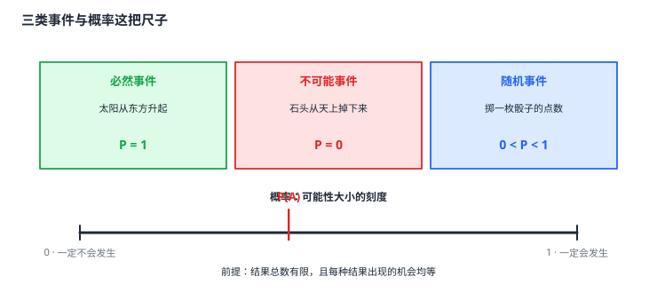

事件的概率
有些事在试验前就能断定结果（太阳从东边升起），有些事永远不可能发生（石头掉到天上），还有些事先无法断定但有规律可循（掷一枚骰子）——前两类是必然事件与不可能事件，第三类是随机事件。概率就是刻画随机事件发生可能性大小的数，记作 P(A)，取值在 0 与 1 之间：必然事件是 1，不可能事件是 0，随机事件严格介于两者之间。当一次试验的结果总数有限且每种结果出现的机会均等时，事件 A 包含 m 种结果、总结果数为 n，则 P(A)=m/n——这两个前提一个都不能少，少一个它就只是个数比，不是概率。
| 所属主题 | 概率 |
|---|---|
| 所属模块 | 统计与概率 |
| 课标学段 | 第四学段（7~9 年级） |
| 前置知识 | 数据的收集 |
| 核心素养 | 数据观念抽象能力推理能力 |
教材定位
人民教育出版社《人教版（2024版）义务教育教科书·数学》
九年级下册第34章 随机事件的概率34.1 随机事件与概率
对应九下 34.1：34.1.1 随机事件与 34.1.2 概率。
说明
先分清三类。在一定条件下，事件按会不会发生分三类：一定会发生的叫必然事件（如太阳从东方升起），一定不会发生的叫不可能事件（如石头从天上掉下来），可能发生也可能不发生的叫随机事件（如掷一枚骰子的点数）。前两类没有「可能性大小」可谈，概率恒为 1 或 0；只有随机事件才谈得上概率。
概率是描述随机事件发生可能性大小的数，记作 P(A)（A 是事件）。它的三条基本性质：① P(A)≥ 0；② P(A)≤ 1；③ 必然事件的概率是 1，不可能事件的概率是 0，随机事件的概率满足 0<P(A)<1。所以算出一个大于 1 或小于 0 的概率，一定是某一步数错了——这个自检和「概率不能大于 1」一样可靠。
等可能事件的概率公式是 P(A)=m/n：一次试验有 n 种等可能的结果，其中事件 A 包含 m 种，则 P(A)=m/n。这里的 m 与 n 都必须数准：m 是包含目标事件的结果数（不是「不包含」的），n 是全部等可能结果数。
这个公式有两个不能省的前提，是本节最要紧的东西。第一，结果总数有限——不能有无穷多种结果（连续地掷、无限次地摸，结果无穷多，公式不适用）。第二，每种结果出现的机会均等——掷一枚均匀的骰子，六个点数等可能；掷一枚灌了铅的骰子就不等可能，此时 m 与 n 的比值不再是概率。少一个前提，m/n 就只是个数比。
概率与频率是同一件事的两个侧面：做大量重复试验，事件 A 发生的频率会稳定在 P(A) 附近——频率是看得见的、概率是推出来的，这就是为什么可以用试验来估计概率（下一篇 用频率估计概率 专门讲这件事）。
使用场景
抽奖与转盘：抽奖活动里「中一等奖」是随机事件，中奖概率通常被明确标出，人们据此判断这件事值不值得参加。
天气预报与出行：「明天下雨」是个随机事件，降水概率这个数字，就是把「可能下雨」这件事的可能性大小翻译成了可读的值。
注意点
算概率前先问「结果总数有限吗、等可能吗」。不满足这两个前提就不能套 m/n——例如「抛一枚硬币，落地时哪面朝上」——落地的姿态、位置有无穷多种，数不出结果总数 n，套不了公式（但正面朝上的概率依然存在，约 \tfrac12，只是要换别的办法得到它）。
分母是全部等可能结果的个数，不是目标结果的个数。有人把 P(A)=m/n 记成「A 发生的机会是 m 比 n」，n 写成了别的东西——记住 n 是总的，m 是含 A 的。
概率大不等于「一定会发生」。P(A)=0.9 只是说十次里大约有九次，剩下那一次照样可能发生；反过来 P(A)=0.05 也不等于不会发生。概率是长期规律，不是对单次的预言。
概率不可能大于 1、不可能小于 0。算出越界的值，先回头查 m、n 数对没有、有没有把「不含 A 的结果数」当成了分子。
证明

图 1：三类事件的概率取值，以及概率这把「可能性」的尺子
证明
结论 1概率必落在 0 与 1 之间：必然事件的概率是 1，不可能事件的概率是 0，随机事件的概率严格介于两者之间。
概率衡量的是「在所有等可能结果中，A 占了几个」，也就是 m 与 n 的比值。因为 m≤ n（含 A 的结果不可能超过全部结果），比值天然不超过 1；又因 m≥ 0，比值不小于 0。当 m=n（所有结果都属于 A，A 是必然事件）时取到 1；当 m=0（没有任何结果属于 A，A 是不可能事件）时取到 0。所以这两个端点不是人为规定的，而是公式的必然结果。
关键一步上下界不是人为定下来的，而是公式的必然结果：概率是 m 与 n 的比值，因为 m≤ n（含 A 的结果不可能超过全部结果），比值天然不超过 1；又因 m≥ 0，比值不小于 0。两个端点都真实可达——m=n 时 A 是必然事件取到 1，m=0 时 A 是不可能事件取到 0。
结论 2公式 P(A)=m/n 必须建立在「每种结果出现的机会均等」这个前提上，否则它只是一个个数比。
公式 P(A)=m/n 背后的道理是「每个结果分到 A 的可能性份额都是 1/n，m 个结果合起来就是 m/n」。若各结果的机会不等（比如骰子灌铅后 6 点更容易出现），那么 m 个结果分到的总份额就不再是 m/n，公式失效。这不是说「概率算不了」，而是说要改用「各结果的机会权重」来算。
关键一步公式背后的道理是「每个结果分到 A 的可能性份额都是 1/n，m 个结果合起来就是 m/n」——这一步把总份额 1 平均分给了 n 个结果，正是「等可能」的含义。若各结果的机会不等（比如骰子灌铅后 6 点更容易出现），那么 m 个结果分到的总份额就不再是 m/n，公式失效。这不是说「概率算不了」，而是说要改用「各结果的机会权重」来算。
结论 3用 m/n 还要求结果总数有限：结果无穷多时，每一份份额无限小，公式失去意义。
m/n 的推导靠的是把总份额 1 平均分成 n 份。若结果无穷多，每一份就无限小，「m 份合起来是多少」不再能用有限个数的加法算出来，公式失去意义。骰子有 6 个面所以能用；掷硬币落在地上有无穷多个位置，所以不能说「正面朝上的概率是无穷多种结果里的某几种」。
关键一步依据是三条要同时满足的规则：结果总数有限（否则「把总份额 1 平均分成 n 份」这一步无法进行，每一份无限小）、每种结果机会均等（否则份额不是 1/n）、以及事件 A 含 m 种结果且这 m 种互不相同（否则「m 份相加」数不准）。骰子有 6 个面所以能用；掷硬币落在地上有无穷多个位置，份数说不上是几，所以不能说「正面朝上的概率是无穷多种结果里的某几种」。
结论 4做大量重复试验时，事件 A 发生的频率会稳定在 P(A) 附近。
设想做 k 次重复试验，事件 A 发生了 t 次，频率为 t/k。每次试验中 A 发生的机会都是 P(A)，独立重复 k 次后，t 这个计数的平均值是 kP(A)，而实际计数的波动随 k 增大而相对变小，所以 t/k 就稳定在 P(A) 附近。频率是概率的可见形式，概率是频率背后的那个数——这正是可以用掷硬币、摸球这类简单试验去估计一个看不见的概率的原因。
关键一步依据是「每次试验中 A 发生的机会都是 P(A)」这条独立性条件：独立重复 k 次后，t 这个计数的平均值是 kP(A)，而实际计数的波动随 k 增大而相对变小，所以 t/k 就稳定在 P(A) 附近。频率是试验次数多起来以后显现出来的稳定值，概率则是这个稳定值的理论刻画——频率是概率的可见形式，概率是频率背后的那个数。
动手实验
做一次「估计硬币正面的概率」的实验：把一枚硬币连抛 10 次，记录正面次数，算出频率；再抛到 50 次、200 次，每次算一次频率，把三个频率抄在纸上。你会发现 10 次的频率常常离 0.5 很远（可能 0.7 也可能 0.3），50 次时已经比较接近，200 次时几乎就贴着 0.5 了。实验次数太少时看到的是偶然，次数足够多时看到的才是规律——这正是「概率是长期规律、不是单次预言」的最好注解。
解题思路
求一个事件的概率四步：① 判断事件类型（必然、不可能、随机），随机事件才需要算；② 检查两个前提（结果总数是否有限、是否等可能），有一个不满足就不能套公式；③ 数出 n（全部等可能结果的个数）与 m（包含该事件的结果数）；④ 写出 P(A)=m/n 并检查结果落在 0 到 1 之间。
概率语言与生活语言对照：必然事件说「一定」，不可能事件说「不可能」，随机事件说「有可能」；P(A)=1 意味着每次都发生，P(A)=0 意味着每次都不发生，0<P(A)<1 意味着有时发生有时不发生。读概率题时先把题目翻译成这三类之一。
由简单事件求复杂事件：若 A 与 B 互斥（不可能同时发生），则 P(A\cup B)=P(A)+P(B)；若 A 与 B 互补（必有一个发生），则 P(A)+P(B)=1，求其一等于 1 减去另一个。先补到「一个分母」再算，不要分别去数两遍。
按场景的例题
例 1（场景：竞技与游戏） 判断三类事件
在下列四种情况下，指出哪些是必然事件、哪些是不可能事件、哪些是随机事件，并说明理由：(1) 掷一枚均匀的骰子，出现的点数是 6；(2) 明天太阳会从东方升起；(3) 从袋中任意摸出一个球，它是红球；(4) 明天天上下雨。
解：(1) 掷骰子可能出现 1 到 6 六个点数，出现 6 有可能也有可能不出现，是随机事件。(2) 地球自西向东转，太阳从东方升起是必然的，是必然事件，P=1。(3) 袋里若既有红球也有其他颜色的球，摸出红球可能发生也可能不发生，是随机事件。(4) 天下雨有时发生有时不发生，是随机事件。这里不可能出现的是那种「怎么试都不可能」的情形，比如「掷一枚骰子出现的点数是 7」——它属于不可能事件，P=0。
答：(2) 是必然事件（P=1）；(1)(3)(4) 都是随机事件；「掷出点数 7」才是不可能事件（P=0）。
例 2（场景：生活优化） 摸球问题的概率计算
一个不透明的袋子中有 3 个红球和 2 个白球，除颜色外完全相同。任意摸出一个球，求：(1) 摸到红球的概率；(2) 摸到白球的概率；(3) 两次摸球（每次摸完放回）都摸到红球的概率。
解：共 5 个球，5 种等可能的结果，有限且等可能，两个前提都满足。(1) 含红球的结果有 3 种，P(\text红)=3/5。(2) 含白球的结果有 2 种，P(\text白)=2/5。(3) 放回意味着每次摸球的 5 种结果完全相同，两次摸球共有 5× 5=25 种等可能的组合，其中两次都是红球的有 3× 3=9 种，所以 P(\text两次都红)=9/25。也可用乘法：3/5×3/5=9/25 ✓。
答：(1) 3/5；(2) 2/5；(3) 9/25。
例 3（场景：数据调查） 概率取值范围与「大概率」不等于「一定」
某次抽奖活动的规则是：转动一个被分成 10 等份的转盘，指针停在红色区域就中一等奖。已知红色区域占转盘的 2 份。求中一等奖的概率，并回答：这个活动「中一等奖的概率很大」的说法对吗？
解：转盘被分成 10 份等份，是 10 种等可能的结果，有限且等可能，两个前提都满足。红色区域含 2 份，故 P(\text中一等奖)=2/10=1/5=20%。说这个活动「中一等奖的概率很大」并不准确：20% 意味着大约每 5 次才中一次，属于较小的概率。「概率大」需要具体比较——比如活动另一条规定「不转也能直接领三等奖」，那一项的概率是 1，而中一等奖是 1/5，此时说「中一等奖的概率比不转小得多」才是准确的表述。概率是一个有精确数值的量，「大」「小」必须拿它和别的概率比，不能凭感觉说。
答：中一等奖的概率为 1/5=20%；说它「概率很大」不准确，应与其他项目的概率作具体比较。
常用推论
概率是「可能性」的量化语言，而可能性只有三档：一定、可能、不可能。把「会不会发生」这种模糊判断变成 0 到 1 之间的一个数之后，就能做运算了——比较两个事件谁更可能、算「至少发生一个」的复合事件，都靠这个数值。模糊判断一旦有了刻度，就成了可计算的对象。
P(A)=m/n 的两个前提——有限与等可能——正是它适用范围的两条边界，超出边界就要换工具：结果无穷多时改用「密度」类的连续型概率（高中内容），结果不等可能时改用按机会权重加权。这两条边界比公式本身更值得记——边界记牢，才不会在结果无穷多或不等可能时乱套公式。
从「频率稳定在概率附近」到「可以用试验估计概率」，再到统计里的「用样本估计总体」，是同一条思路的三次出现：用可重复的小规模现象去推断不可直接观测的量。统计与概率在初中阶段共用这个内核，只是推断的对象不同——一个估计数量，一个估计可能性。
易错点
错「一枚骰子掷出 6 点的概率是 1/6，所以掷出 6 点这件事一定会发生，只是机会小。」
为什么错把「概率小」和「不可能」混了。P=1/6 是随机事件，表示六次里大约有一次，而不是每次都发生。若真会「一定发生」，那是必然事件，概率应当是 1。
正确掷出 6 点是随机事件，概率 1/6，可能发生也可能不发生。
错「袋里有 3 个红球 2 个白球，摸到红球的概率是 2/5。」
为什么错分子分母数反了。分母 5 是全部等可能结果的个数，分子应当是包含目标事件的结果数——红球有 3 个，所以分子是 3。写成 2/5 恰好是摸到白球的概率。
正确P(\text红)=3/5，P(\text白)=2/5；两者之和为 1，可作验算。
错「转盘被分成 10 份，其中 2 份是红色，所以转两次都停在红色的概率是 2/10×2/10 的平方。」
为什么错表达式写重了：2/10 已经是单次转动的概率，两次相乘就是答案 1/25，不需要再平方一次。另外若两次之间不放回、不独立（比如转盘会转掉一块），就不能直接相乘——此时要按「有放回、无放回」分别数结果的总数。
正确独立重复时 P=2/10×2/10=1/25；若两次不独立，须重新列举全部等可能结果再数分子。
直观理解
概率是「可能性」这把尺子上的刻度：0 是「绝无可能」，1 是「必定发生」，中间的数字表示「有多可能」。有了刻度，「中一等奖的机会大不大」「明天下雨的可能性多大」这类模糊问话才变成能比较、能计算的问题。P(A)=m/n 的道理很朴素——把所有等可能的结果平分给「一定发生」这件事，目标结果分到几份，就得到几份（图 1）。前提是「平分」，所以一旦结果不再均等，这把尺子就得重新校准。